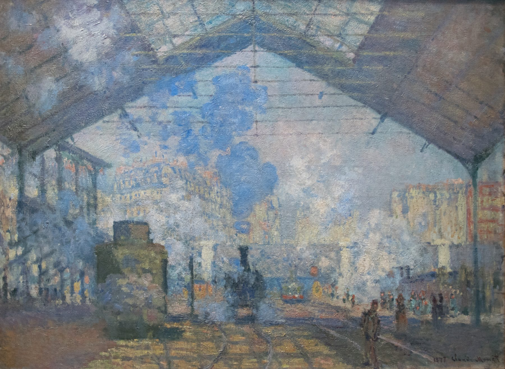

Poems
Gare Saint-Lazare

the poetry of the nineteenth century is no longer God. l’Ordre Moral has given way to steam. beautiful clouds once reserved for angels are now made by MAN. Paris is heaven wrought by the hands of Haussmann. palaces of iron and concrete loom over the sinners, it is fortunate that Monet can see the chiffonniers lugging debris back to la Cité Doré. even more fortunate that the billowing steam can turn the scraps in their hottes into cerulean haze. only on the rising steam of the blanchisseuse’s cuveaux can Monet’s haystacks and water lilies — and Giverny — be built. the faces of people are but dabs of ochre.
Owen Zhang is a writer in Bellingham, Washington. His work has appeared in “A Forest of Words”, “Moss”, and “The Alexander Review”.